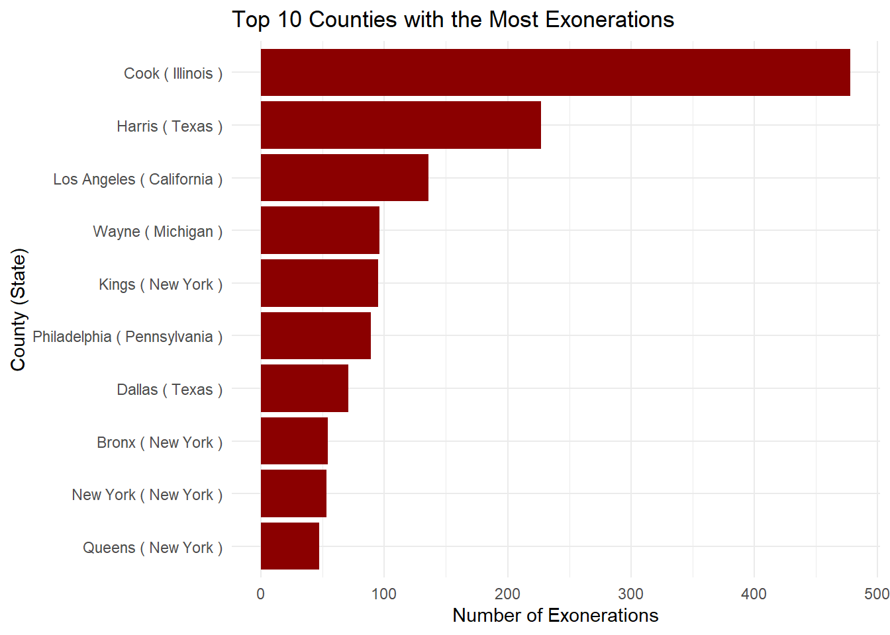

Our fifth blog post containing details about our second dataset.
Author
Team 10 (Mango)
Published
April 7, 2025
Combining Two Datasets for Deeper Insights
Our initial analysis centered on the National Registry of Exonerations dataset, which captures cases where wrongfully convicted individuals were later exonerated. It gave us a unique perspective on how wrongful convictions occur and the factors—such as official misconduct or false confessions—that contribute to these errors. However, we are going to include at least one additional dataset to enrich our analysis. This week, we turned our attention to publicly available records of general crime data in Chicago, aiming to compare exoneration trends to the broader pool of convictions and reported crimes.
Selecting the Chicago Crime Dataset
We chose to work with the “Crimes – 2001 to Present” dataset from the City of Chicago data portal. This dataset offers a comprehensive record of crimes reported in Chicago, including details such as the date of offense, type of crime, and location information. Beyond providing a large sample of data from a single metropolitan area, it directly complements our exoneration dataset: while our exoneration data focuses on cases where convictions were overturned, the Chicago crime data shows us the larger context of how many people are arrested, charged, and convicted of various offenses over time.
Combining the Data
Since our exoneration data covers the entire United States, we first will filter it to focus on Cook County, Illinois, where Chicago is located. We specifically chose Cook County because it stands out in the exonerations dataset, displaying one of the highest numbers of exonerations nationwide. This makes Cook County a particularly rich location for studying both wrongful convictions and overall crime trends (see graph below).
library(dplyr)
Attaching package: 'dplyr'
The following objects are masked from 'package:stats':
filter, lag
The following objects are masked from 'package:base':
intersect, setdiff, setequal, union
library(ggplot2)# Load the cleaned exoneration datasetexoneration_data <-readRDS(here::here("dataset", "exoneration_data_clean.rds"))library(dplyr)library(ggplot2)# Count exonerations by county and sorttop_counties <- exoneration_data %>%filter(!is.na(County)) %>%group_by(State, County) %>%summarise(Exoneration_Count =n(), .groups ="drop") %>%arrange(desc(Exoneration_Count)) %>%slice_head(n =10) %>%mutate(County_Label =paste(County, "(", State, ")", sep =" "))# Plotggplot(top_counties, aes(x =reorder(County_Label, Exoneration_Count), y = Exoneration_Count)) +geom_col(fill ="darkred") +coord_flip() +labs(title ="Top 10 Counties with the Most Exonerations",x ="County (State)",y ="Number of Exonerations" ) +theme_minimal()

Our initial plan is to align the two datasets primarily by date. We want to observe how exonerations in Cook County track alongside the volume and nature of crimes reported in Chicago over the same time span. For instance, we might compare annual trends: in years where Chicago saw higher rates of certain crimes (like homicide or assault), did we also see higher numbers of exonerations for those crimes later on?
In practice, combining the data means creating a common time structure—in this case, year or month-year—and then grouping or aggregating metrics from each dataset. In the exonerations data, we have case-level information (e.g., date of conviction or exoneration), while the Chicago crime data can be grouped by date reported or arrest date. We can then connect these by matching year (and possibly month) to compare how many crimes were committed versus how many exonerations occurred in that same window.
Initial Findings and Challenges
Although we are still in the early stages of combining the two datasets, we have already uncovered a few insights and challenges. First, Cook County’s exoneration cases span a wide range of years, including cases that started well before 2001 (the earliest date in our Chicago crime dataset). As a result, a direct one-to-one match for all exonerations is not possible. We’ll need to focus on exonerations that occurred or that began in the timeframe where Chicago crime data is available, and focus on trends from the big picture.
Second, the Chicago crime dataset is very large. It contains millions of rows of data since 2001, which can present performance challenges. We plan to filter it more narrowly, focusing on the worst crimes in our exoneration dataset—like homicide—so we can draw cleaner comparisons and avoid memory issues or very long processing times.
Lastly, we noted that our exoneration dataset tracks a different “lifecycle” of a criminal case. An exoneration might occur many years after the original conviction date. Meanwhile, the Chicago crime data captures the incident date and basic details of the offense but does not necessarily track outcome in the courts. Thus, comparing “crimes filed” to “exonerations” is more complex than a simple 1:1 join. We are approaching this by looking at broad trends rather than trying to match individual cases.
Next Steps
Over the coming week, we will refine our data filtering strategies and aggregation methods. We will likely create an annual-level panel that shows, for each year, the number of convictions (as recorded by arrests or charges in the Chicago crime data) versus the number of exonerations in Cook County for major crime categories. We then plan to explore:
Whether spikes in reported crimes correlate with spikes in wrongful convictions a few years later.
The types of crimes most commonly associated with exonerations in Cook County, and how those compare to the overall crime landscape in Chicago.
By integrating these two datasets, we hope to provide a richer picture of how wrongful convictions fit into the broader criminal justice context in Chicago, and potentially highlight systemic issues that contribute to both wrongful convictions and crime trends more generally.